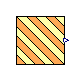

This package contains additional add ons that can be added to the original renewable models.
| Name | Description |
|---|---|
| IrradianceToPower | PV Array Power Output from Irradiance. |

OpenIPSL.Electrical.Renewables.PSSE.AddOnBlocks.IrradianceToPowerPV Array Power Output from Irradiance.
| Name | Description |
|---|---|
| M_b | Equipment apparent power [V.A] |
| Ypv | Rated capacity of the PV array [W] |
| Tcstc | PV cell temperature under standard test conditions [K] |
| fpv | PV derating factor |
| ap | Temperature coefficient of power |
| Gtstc | Radiant energy fluence rate of PV array [W/m2] |
| SolarRadiationTable[:, :] | Table matrix (time = first column; e.g., table=[0, 0; 1, 1; 2, 4]) |
| SolarArrayTemperatureTable[:, :] | Table matrix (time = first column; e.g., table=[0, 0; 1, 1; 2, 4]) |
| Name | Description |
|---|---|
| Ppv |